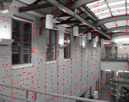
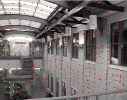

|
|
|
|
|
Programming Project #4 (proj4B) (second part) |



FEATURE MATCHING for AUTOSTITCHING
(second part of a larger project)
The goal of this project is to create a system for automatically
stitching images into a mosaic.
A secondary goal is to learn how to read and implement a research
paper. The project will
consist of the following steps:
-
Detecting corner features in an image (10 pts)
-
Extracting a Feature Descriptor for each feature point (10
pts)
-
Matching these feature descriptors between two images (20
pts)
-
Use a robust method (RANSAC) to compute a homography (30 pts)
-
Proceed as in the first part to produce a mosaic (30 pts; you may
use the same images from part A, but show both manually and
automatically stitched results side by side) [produce at least
three mosaics]
-
Submit your results
Steps 1-3
For steps 1-3, we will follow the paper
“Multi-Image Matching using Multi-Scale Oriented
Patches” by Brown et al.
but with several simplifications. Read the paper first and make sure
you understand it. Then
implement the algorithm:
-
Start with Harris Interest Point Detector (Section 2).
We won’t worry about muti-scale – just do a single
scale. Also, don’t
worry about sub-pixel accuracy.
Re-implementing Harris is a thankless task – so you can use
my sample code:
harris.py
. Include on your webpage a figure of the Harris corners overlaid
on the image.
- Implement Adaptive Non-Maximal Suppression (Section 3). Include on your webpage a figure of the chosen corners overlaid on the image. The paper section is confusing; you may need to read it a few times. You may want to skip this step and come back to it; just choose a random set of corners instead in the meantime.
-
Implement Feature Descriptor extraction (Section 4).
Don’t worry about rotation-invariance – just extract
axis-aligned 8x8 patches. Note that it’s extremely important to sample these patches
from the larger 40x40 window to have a nice big blurred
descriptor. Don’t
forget to bias/gain-normalize the descriptors. Ignore the wavelet
transform section.
-
Implement Feature Matching (Section 5). That is, you will need to
find pairs of features that look similar and are thus likely to be
good matches. For thresholding, use the simpler approach due to
Lowe of thresholding on the ratio between the first and the second
nearest neighbors. Consult Figure 6b in the paper for picking the
threshold. Ignore Section
6.
Step 4
For step 4, use 4-point RANSAC as described in class to compute a
robust homography estimate.
What have you learned?
Tell us whats the coolest thing you have learned from this project.
Submit Your Results
You will need to submit all your code. Please include a README with your code describing where each of the steps was implemented. If you skipped a step, say so, to save your GSI some time!
Bells & Whistles
-
(0.125 cookie points)
Add multiscale processing for corner detection and feature
description.
-
(0.125 cookie points)
Add rotation invariance to the descriptors.
-
(0.25 cookie points)
Implement panorama recognition.
Given an unordered set of images, some of which might form
panoramas, you need to automatically discover and stitch these
panoramas together. Don’t worry about bundle adjustment, just see how far you can
get with pair-wise homography estimation.